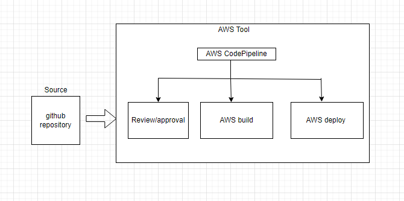

This is Test file for AWS CD Pipeline.Also Review stage added for manual approval
Fork or create a repo and make a app.js file containing your Website Content and push the code to remote repo
Configure Elastic Beanstalk which deploys, manages, and scales your application with appropriate Environment,Webserver, Platform and HTTP protocol
It compiles source code, run tests, and package software for deployment.
Configure source stage,build stage ,deploy stage using GitHub repo ,AWS CodeBuild, AWS ElasticBeanstalk application respectively and then deploying application through a pipeline.
Add a review stage to your pipeline to Manually approve a change before it is deployed